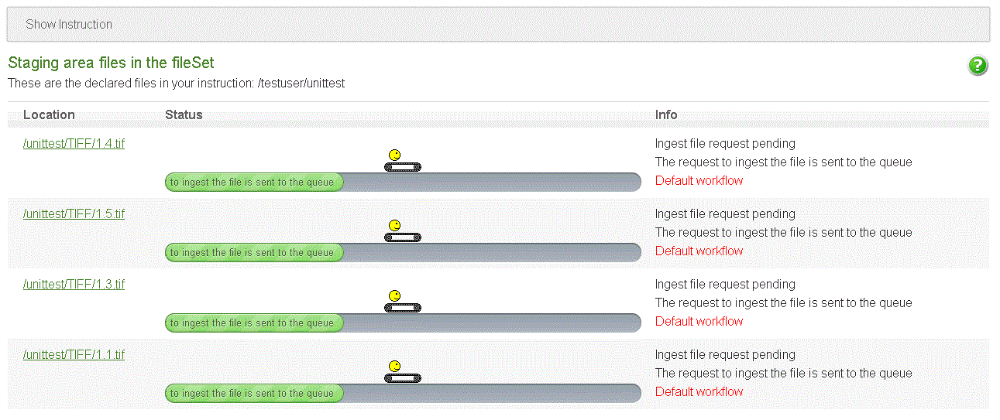

5 Administration interface - Reference Documentation
Authors: Lucien van Wouw
Version: 1.1
Table of Contents
5 Administration interface
The administration interface is where a CP administrator can create ftp accounts and other CP administrator accounts. In addition:- You can set your profile. That is, defaults for the processing instruction such as access, mimetype
- Define access policies
- Oversee the production of instructions, starting procedures and monitor the status
- Download technical metadata of stored material
5.1 Ftp accounts
The account section will allow you manage three types of access:- ftp accounts for uploading and managing files on the staging area
- CP administrator accounts to operate the administration interface.
- A function of both accounts is to supply webservice keys. This key gives access to all admin and stored repository resources.
Create a user
You need to fill in or edit the following fields:Role: ROLE_CPADMIN is the account with which a user can manage the administration panel. Although it is possible to
upload files with this account, it is wiser to use a ROLE_ROLE_OR_FTP_USER account as it will prevent confusion regarding the
location of the processing instruction.ROLE_ROLE_OR_FTP_USER is intended for FTP purposes. One cannot operate the administration panel with an CPUSER account.Login name: A user name containing letters and numbers
Password: If the password is left blank, a random password will be created
E-mail: The end-user's mail address.
Enabled: If on, the account can be used to login.User display
This view will also show the webservice key. The key is intended to access an object repository resource that is normally closed for anonymous users. The key needs to be attached to the resolve URL that points to a resource. Or be in the header file of a client that is responsible for downloading the files.The webservice key has the same effect when a user uses a username and password to access the administration interface.To modify the webservice key select "Change key"editing and removing
Any account can be modified, yet one cannot delete oneself however. Only a CP administrator can remove another CP administrator.5.2 Profile
The profile is where you set the default values that are taken over by any processing instruction. That is: Settings in the profile substitute any absent values in the XML processing instruction. It makes sense therefore, to place all your broad access policies and most frequently used file content values.The available options are described at the settings section.5.3 Access policies
A policy determines what an anonymous user can and cannot do. Lets say that is a person with a webbrowser who is not logged on to the object repository. Access to each master file and its related derivatives are thus governed by a policy.There are three main policies available:| policy | access |
|---|---|
| closed | no files can be downloaded or viewed |
| restricted | level 1 derivatives are restricted ; level 2 and 3 are viewable to the world |
| open | All derivatives are viewable to the world |
Custom policies
You cannot modify these default policies, but to add your own custom policy is easily done by selecting "New Policy". For each master and derivative you can determine it's access level.5.4 Managing and monitoring instructions
Each main folder in the staging area you see is represented here.The moment when a XML instruction is offered; or when it is autocreated, the number of declared files will show up. In addition each file will have a validation status. The files can be viewed by selecting the link of the main folder.options
Autocreate
This will autocreate an instruction. Press it and depending on the number of files, the instruction will be put into
the database.@Download
One you created or uploaded an instruction, it can be downloaded as an XML instruction document.Unfortunately, the download back to the staging area of an instruction is not possible because of server permissions. However, you can download instructions via the browser.
Upload
You can upload a XML instruction here so it will be placed on the staging area. FTP is also a way of uploading an
instruction.Validate
Will perform a check on the instruction vis-a-vis the files in the staging area.Process files
Kick starts the instruction
If you monitor the progress of for example an upload, creation or validation of an instruction it will eventually
finish. However no ingest instruction option seems to appear. To make it appear, press the browser's refresh button.
Monitoring
Each phase or step in the creation and running of an instruction can be monitored. The same for each individual files. During an ingest, you can see the accumulative result of all files by selecting the link of the main folder.Instruction status
This is the particular status of an instruction
Files status accumulative
All progress for the filesPer file view